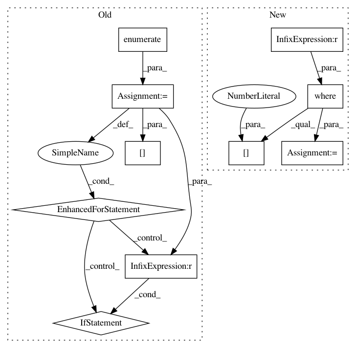

aa7322f6057dce6424af3f2245e4c45bd33af05e,scripts/speaker_embedding.py,,speaker_recognition_xp,#Any#Any#Any#Any#Any#,278
Before Change
y_pred = []
key_mapping = {0: None, -1: 0, 1: 1}
for i, _ in enumerate(keys.index):
for j, _ in enumerate(keys):
y = key_mapping[keys.iloc[i, j]]
if y is None:
continue
y_true.append(y)
y_pred.append(D[i, j])
y_true = np.array(y_true)
y_pred = np.array(y_pred)
return det_curve(y_true, y_pred, distances=True)
After Change
y_pred = []
positive = D[np.where(keys == 1)]
negative = D[np.where(keys == -1)]
// untested = D[np.where(keys == 0)]
y_pred = np.hstack([positive, negative])
n_positive = positive.shape[0]
n_negative = negative.shape[0]
// n_untested = untested.shape[0]
y_true = np.hstack([np.ones(n_positive,), np.zeros(n_negative)])
return det_curve(y_true, y_pred, distances=True)
In pattern: SUPERPATTERN
Frequency: 3
Non-data size: 10
Instances
Project Name: pyannote/pyannote-audio
Commit Name: aa7322f6057dce6424af3f2245e4c45bd33af05e
Time: 2017-01-11
Author: bredin@limsi.fr
File Name: scripts/speaker_embedding.py
Class Name:
Method Name: speaker_recognition_xp
Project Name: biotite-dev/biotite
Commit Name: b44dc788d6eaf6fe53cb6468763b46a0c4c74a12
Time: 2020-12-22
Author: anter.jacob@gmail.com
File Name: src/biotite/structure/charges.py
Class Name:
Method Name: partial_charges
Project Name: biocore/scikit-bio
Commit Name: b0e3b96c4d4fef0f8999934438433cb5a502fa75
Time: 2014-02-21
Author: jai.rideout@gmail.com
File Name: bipy/maths/stats/distance/anosim.py
Class Name: ANOSIM
Method Name: _anosim